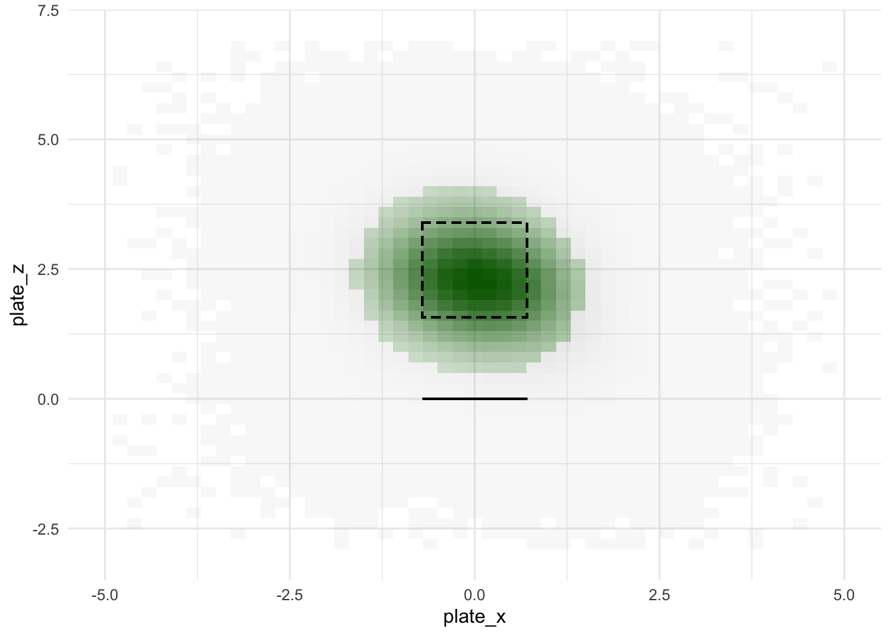

Last updated: 2020-02-21
Checks: 6 0
Knit directory: MLB/
This reproducible R Markdown analysis was created with workflowr (version 1.2.0). The Report tab describes the reproducibility checks that were applied when the results were created. The Past versions tab lists the development history.
Great! Since the R Markdown file has been committed to the Git repository, you know the exact version of the code that produced these results.
Great job! The global environment was empty. Objects defined in the global environment can affect the analysis in your R Markdown file in unknown ways. For reproduciblity it’s best to always run the code in an empty environment.
The command set.seed(20200202) was run prior to running the code in the R Markdown file. Setting a seed ensures that any results that rely on randomness, e.g. subsampling or permutations, are reproducible.
Great job! Recording the operating system, R version, and package versions is critical for reproducibility.
Nice! There were no cached chunks for this analysis, so you can be confident that you successfully produced the results during this run.
Great! You are using Git for version control. Tracking code development and connecting the code version to the results is critical for reproducibility. The version displayed above was the version of the Git repository at the time these results were generated.
Note that you need to be careful to ensure that all relevant files for the analysis have been committed to Git prior to generating the results (you can use wflow_publish or wflow_git_commit). workflowr only checks the R Markdown file, but you know if there are other scripts or data files that it depends on. Below is the status of the Git repository when the results were generated:
Ignored files:
Ignored: .RData
Ignored: .Rhistory
Ignored: .Rproj.user/
Ignored: data/mlb2017data.rds
Ignored: data/mlb2018data.rds
Ignored: data/mlb2019data.rds
Untracked files:
Untracked: .DS_Store
Untracked: code/BBrates.R
Untracked: code/park_factors.R
Untracked: code/xBB.R
Untracked: data/.DS_Store
Untracked: data/SteamerProjBatters2019.csv
Untracked: data/exit_velocity-2018.csv
Untracked: data/exit_velocity-2019.csv
Untracked: data/expected_stats-2018.csv
Untracked: data/expected_stats-2019.csv
Untracked: data/fangraphs-2018.csv
Untracked: data/fangraphs-2019.csv
Untracked: data/standard2015NP.csv
Untracked: data/standard2016.csv
Untracked: data/standard2016NP.csv
Untracked: data/standard2017.csv
Untracked: data/standard2017NP.csv
Untracked: data/standard2018.csv
Untracked: data/standard2018NP.csv
Untracked: data/standard2019.csv
Untracked: data/standard2019NP.csv
Untracked: output/event_vals.rds
Untracked: output/mlb_preproc.rds
Untracked: output/pitchloc_res.rds
Unstaged changes:
Modified: .gitignore
Modified: analysis/countloc_pitchloc.Rmd
Deleted: output/README.md
Note that any generated files, e.g. HTML, png, CSS, etc., are not included in this status report because it is ok for generated content to have uncommitted changes.
These are the previous versions of the R Markdown and HTML files. If you’ve configured a remote Git repository (see ?wflow_git_remote), click on the hyperlinks in the table below to view them.
| File | Version | Author | Date | Message |
|---|---|---|---|---|
| Rmd | a1a0af7 | Jason Willwerscheid | 2020-02-21 | wflow_publish(“analysis/countloc_preproc.Rmd”) |
| html | b1e081e | Jason Willwerscheid | 2020-02-20 | Build site. |
| Rmd | 58a6d7f | Jason Willwerscheid | 2020-02-20 | wflow_publish(“analysis/countloc_preproc.Rmd”) |
| html | 7aab8e4 | Jason Willwerscheid | 2020-02-20 | Build site. |
| Rmd | 403035c | Jason Willwerscheid | 2020-02-20 | wflow_publish(“analysis/countloc_preproc.Rmd”) |
| html | 5eb5f07 | Jason Willwerscheid | 2020-02-20 | Build site. |
| Rmd | a683ede | Jason Willwerscheid | 2020-02-20 | wflow_publish(“analysis/countloc_preproc.Rmd”) |
| html | dee8547 | Jason Willwerscheid | 2020-02-20 | Build site. |
| Rmd | 264abcf | Jason Willwerscheid | 2020-02-20 | wflow_publish(“analysis/countloc_preproc.Rmd”) |
I used the baseballr package to scrape Statcast data from seasons 2017-2019. Since Statcast will only return a few days’ worth of data at a time, a loop is required. For example, I scraped the 2017 data as follows:
# Not run:
season_begin <- as.Date("2017-04-02")
season_end <- as.Date("2017-11-01")
dat <- tibble()
start_date <- season_begin
while (start_date <= season_end) {
cat("Start Date:", format(start_date, "%m-%d-%y"), "\n")
dat <- dat %>%
bind_rows(baseballr::scrape_statcast_savant_batter_all(start_date = start_date,
end_date = start_date + 6))
start_date <- start_date + 7
}
saveRDS(dat, "data/mlb2017data.rds")Since I want to capture average position players’ behavior when facing average pitchers, I remove plate appearances where a pitcher is at the plate or where a position player is called in to pitch. I make specific exceptions for two-way players Shohei Ohtani and Michael Lorenzen.
suppressMessages(library(tidyverse))
all_pitches <- readRDS("data/mlb2019data.rds") %>%
bind_rows(readRDS("data/mlb2018data.rds")) %>%
bind_rows(readRDS("data/mlb2017data.rds"))
pitchers <- all_pitches %>%
group_by(pitcher) %>%
summarize(n = n())
batters <- all_pitches %>%
group_by(batter) %>%
summarize(n = n())
# A player is defined as a pitcher if they throw more pitches than they face.
pitchers <- pitchers %>%
left_join(batters, by = c("pitcher" = "batter"), suffix = c("_thrown", "_faced")) %>%
filter(is.na(n_faced) | n_faced < n_thrown) %>%
pull(pitcher)
two_way <- unique(all_pitches$batter[all_pitches$player_name
%in% c("Shohei Ohtani", "Michael Lorenzen")])
prev_nrow <- nrow(all_pitches)
all_pitches <- all_pitches %>%
filter(pitcher %in% pitchers,
batter %in% two_way | !(batter %in% pitchers))
# What percentage of pitches have I removed?
paste0(round(100 * (prev_nrow - nrow(all_pitches)) / prev_nrow, 1),
"% of pitches removed")#> [1] "2.7% of pitches removed"To get count-specific wOBA values, I need to be able to determine the outcome of each plate appearance (PA). One problem with the Statcast data is that there’s not a unique PA ID, and there’s not a straightforward way to assign one. The best solution I came up with was to group by game date, home team, and at-bat number, but this method is unable to distinguish between games played in a doubleheader. I thought about additionally grouping by batter and pitcher, but PAs in which a pitching change occurred mid-at-bat would pose problems, and there is a small chance that the same batter will face the same pitcher in the same at-bat number in subsequent games of a doubleheader. Thus I elected to remove doubleheaders from the data.
prev_nrow <- nrow(all_pitches)
PA_df <- all_pitches %>%
group_by(game_date, home_team, at_bat_number) %>%
summarize(is_doubleheader = (sum(balls == 0 & strikes == 0) == 2)) %>%
ungroup() %>%
mutate(PA_ID = row_number())
all_pitches <- all_pitches %>%
left_join(PA_df, by = c("game_date", "home_team", "at_bat_number")) %>%
filter(!is_doubleheader)
# Get the wOBA values for each PA outcome.
all_pitches <- all_pitches %>%
mutate_at(vars(woba_value, woba_denom), ~ replace_na(., 0))
PA_woba <- all_pitches %>%
group_by(PA_ID) %>%
summarize(pa_woba_denom = max(woba_denom), pa_woba_value = max(woba_value)) %>%
ungroup()
all_pitches <- all_pitches %>%
left_join(PA_woba, by = "PA_ID")
paste0(round(100 * (prev_nrow - nrow(all_pitches)) / prev_nrow, 1),
"% of pitches removed")#> [1] "2.4% of pitches removed"I remove pitchouts, HBPs, and batter and catcher interference. There are also a small number of PAs where the count reaches four balls. I don’t know whether these are errors in data entry or whether the umpires lost track of the count.
prev_nrow <- nrow(all_pitches)
all_pitches <- all_pitches %>%
filter(balls < 4, !(description == "pitchout")) %>%
filter(!(events %in% c("hit_by_pitch", "batter_interference", "catcher_interf")))
paste0(round(100 * (prev_nrow - nrow(all_pitches)) / prev_nrow, 1),
"% of pitches removed")#> [1] "0.3% of pitches removed"I remove pitchouts (apparently, filtering by event isn’t enough), eephus pitches, knuckleballs, and screwballs. I relabel knuckle curves as curveballs, since the pitch movement is so similar. For the same reason, sinkers can be grouped with two-seamers, and for better or worse, I group cutters with sliders and splitters with changeups. This leaves five loosely defined pitch types: four-seamers, two-seamers, sliders, changeups, and curveballs.
prev_nrow <- nrow(all_pitches)
all_pitches <- all_pitches %>%
mutate(pitch_type = case_when(pitch_type == "KC" ~ "CU",
pitch_type == "SI" ~ "FT",
pitch_type == "FC" ~ "SL",
pitch_type == "FS" ~ "CH",
TRUE ~ pitch_type)) %>%
filter(pitch_type %in% c("CH", "CU", "FF", "FT", "SL"))
paste0(round(100 * (prev_nrow - nrow(all_pitches)) / prev_nrow, 1),
"% of pitches removed") #> [1] "0.5% of pitches removed"I need to remove pitches where pitch location data is missing. The event frequencies (ball, blocked ball, called strike, etc.) are very similar between pitches that include this data and those that don’t, so I think it’s safe to assume that this data is missing at random.
prev_nrow <- nrow(all_pitches)
all_pitches <- all_pitches %>%
filter(!is.na(plate_x) & !is.na(plate_z))
paste0(round(100 * (prev_nrow - nrow(all_pitches)) / prev_nrow, 1),
"% of pitches removed")#> [1] "0.1% of pitches removed"Since right-handed hitters’ preferred pitch zones are mirror images of left-handed hitters’, I flip the \(x\)-axis for pitches to lefties. This transformation eliminates the need to condition on handedness in subsequent computations.
all_pitches <- all_pitches %>%
mutate(plate_x = ifelse(stand == "L", -plate_x, plate_x))This final step is the most sensitive part of the preprocessing. I’d like to bin the pitch locations to get nonparametric estimates of swing rates and contact rates. I want to use as fine a grid as possible while retaining enough data points per bin to get reasonably accurate estimates. After some fiddling, I settled on bins with widths and heights of 0.2 feet (2.4 inches). I discarded pitches that landed in very sparsely populated bins: these are pitches that are located far off the plate and are easy to lay off of, so they don’t tell us much about plate discipline.
In the plot below, the dashed lines indicate the theoretical strike zone. The green bins are the ones that I’ve retained.
prev_nrow <- nrow(all_pitches)
all_pitches <- all_pitches %>%
mutate(plate_x = round(plate_x / 2, 1) * 2,
plate_z = round(plate_z / 2, 1) * 2) %>%
group_by(plate_x, plate_z)
plate_left <- -8.5 / 12
plate_right <- 8.5 / 12
sz_left <- plate_left - 2.94 / 2 / 12
sz_right <- plate_right + 2.94 / 2 / 12
sz_bot <- 15.53 / 12
sz_top <- 42.47 / 12
ggplot(all_pitches %>% summarize(n = n()),
aes(plate_x, plate_z, fill = n >= 1000, alpha = n)) +
geom_tile() +
xlim(c(-5, 5)) +
ylim(c(-3, 7)) +
theme_minimal() +
guides(fill = FALSE, alpha = FALSE) +
scale_fill_manual(values = c("grey", "dark green")) +
geom_rect(aes(xmin = sz_left, xmax = sz_right, ymin = sz_bot, ymax = sz_top),
col = "black", linetype = "dashed", alpha = 0) +
geom_segment(aes(x = plate_left, xend = plate_right, y = 0, yend = 0))#> Warning: Removed 72 rows containing missing values (geom_tile).
all_pitches <- all_pitches %>%
filter(length(plate_x) >= 1000) %>%
ungroup()
paste0(round(100 * (prev_nrow - nrow(all_pitches)) / prev_nrow, 1),
"% of pitches removed")#> [1] "6.7% of pitches removed"Finally, I refactor some variables, remove others, and save the results to file.
all_pitches <- all_pitches %>%
mutate(swing = 1L - (description %in% c("ball", "blocked_ball", "called_strike")),
contact = 1L * (description == "foul" | str_starts(description, "hit_into_play")),
foul = 1L * (description %in% c("foul", "foul_pitchout")),
called_strike = 1L * (description == "called_strike")) %>%
select(PA_ID, pa_woba_value, pa_woba_denom, game_year, player_name, balls, strikes,
pitch_type, plate_x, plate_z, swing, contact, foul, called_strike,
woba_value, woba_denom)
saveRDS(all_pitches, "output/mlb_preproc.rds")
sessionInfo()#> R version 3.5.3 (2019-03-11)
#> Platform: x86_64-apple-darwin15.6.0 (64-bit)
#> Running under: macOS Mojave 10.14.6
#>
#> Matrix products: default
#> BLAS: /Library/Frameworks/R.framework/Versions/3.5/Resources/lib/libRblas.0.dylib
#> LAPACK: /Library/Frameworks/R.framework/Versions/3.5/Resources/lib/libRlapack.dylib
#>
#> locale:
#> [1] en_US.UTF-8/en_US.UTF-8/en_US.UTF-8/C/en_US.UTF-8/en_US.UTF-8
#>
#> attached base packages:
#> [1] stats graphics grDevices utils datasets methods base
#>
#> other attached packages:
#> [1] forcats_0.4.0 stringr_1.4.0 dplyr_0.8.0.1 purrr_0.3.2
#> [5] readr_1.3.1 tidyr_0.8.3 tibble_2.1.1 ggplot2_3.2.0
#> [9] tidyverse_1.2.1
#>
#> loaded via a namespace (and not attached):
#> [1] Rcpp_1.0.1 cellranger_1.1.0 pillar_1.3.1 compiler_3.5.3
#> [5] git2r_0.25.2 workflowr_1.2.0 tools_3.5.3 digest_0.6.18
#> [9] lubridate_1.7.4 jsonlite_1.6 evaluate_0.13 nlme_3.1-137
#> [13] gtable_0.3.0 lattice_0.20-38 pkgconfig_2.0.2 rlang_0.4.2
#> [17] cli_1.1.0 rstudioapi_0.10 yaml_2.2.0 haven_2.1.1
#> [21] xfun_0.6 withr_2.1.2 xml2_1.2.0 httr_1.4.0
#> [25] knitr_1.22 hms_0.4.2 generics_0.0.2 fs_1.2.7
#> [29] rprojroot_1.3-2 grid_3.5.3 tidyselect_0.2.5 glue_1.3.1
#> [33] R6_2.4.0 readxl_1.3.1 rmarkdown_1.12 modelr_0.1.5
#> [37] magrittr_1.5 whisker_0.3-2 backports_1.1.3 scales_1.0.0
#> [41] htmltools_0.3.6 rvest_0.3.4 assertthat_0.2.1 colorspace_1.4-1
#> [45] labeling_0.3 stringi_1.4.3 lazyeval_0.2.2 munsell_0.5.0
#> [49] broom_0.5.1 crayon_1.3.4